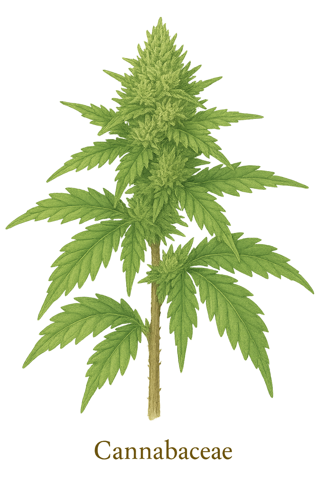

Cannabaceae
Hemp Family (including Hackberries)
Cannabaceae is a diverse family in the order Rosales, significantly expanded under the APG classification to include the former family Celtidaceae (hackberries). It now encompasses annual and perennial herbs (Cannabis), twining vines (Humulus), and widespread trees and shrubs (Celtis, Trema, Aphananthe, etc.). Found worldwide (cosmopolitan), members typically have leaves with stipules (though variable in arrangement and form - simple or palmate), small, unisexual, wind-pollinated flowers lacking petals, and diverse fruit types including achenes, drupes, and samaras. The family includes economically important species like Hemp/Marijuana (Cannabis sativa) and Hops (Humulus lupulus), as well as ecologically significant trees like Hackberries (Celtis spp.).
Overview
The modern definition of Cannabaceae, established by the Angiosperm Phylogeny Group (APG) based primarily on molecular data, unites the traditional Hemp family (Cannabis and Humulus) with the formerly recognized Hackberry family (Celtidaceae, including genera like Celtis, Trema, Aphananthe, Gironniera, Pteroceltis, and Lozanella). This combined family belongs to the order Rosales, within the Fabid clade of Rosids, and is sister to the clade containing Moraceae (Fig family) and Urticaceae (Nettle family).
This broad circumscription results in a morphologically diverse family with a cosmopolitan distribution. Habits range from erect annual herbs (Cannabis) and perennial climbing vines (Humulus) to large deciduous or evergreen trees and shrubs (Celtis, Trema, etc.). Despite the variation, common features include the frequent presence of stipules, predominantly unisexual and wind-pollinated flowers with a simple perianth (tepals) and lacking petals, a superior ovary (usually 1-locular from 2 carpels), and typically 2 styles/stigmas. Fruit types vary according to the lineage: achenes in Cannabis and Humulus, drupes in Celtis and Trema, and samaras in Pteroceltis.
The family holds significant economic and cultural importance through Cannabis sativa (source of fiber, oil, cannabinoids) and Humulus lupulus (hops used in brewing). Trees like Celtis (Hackberry) are ecologically important, providing food and habitat for wildlife (including in Oklahoma, where C. occidentalis is common), and sometimes used for timber. The genus Parasponia is notable as the only non-legume known to form nitrogen-fixing root nodules with rhizobia bacteria.
Quick Facts
- Scientific Name: Cannabaceae Martinov (sensu APG IV)
- Common Name: Hemp family (including Hackberries)
- Number of Genera: Approximately 11
- Number of Species: Approximately 170
- Distribution: Cosmopolitan (worldwide)
- Evolutionary Group: Eudicots - Rosids (Fabids / Eurosids I) - Order Rosales
Key Characteristics
Growth Form and Habit
Highly variable: includes annual or perennial herbs (often erect, e.g., Cannabis), perennial twining vines with hooked hairs (Humulus), and deciduous or evergreen trees and shrubs (Celtis, Trema, Aphananthe, etc.). Latex is absent.
Leaves
Leaf arrangement is variable: often alternate, particularly in woody members (Celtis, Trema), but frequently opposite, especially on lower stems or throughout in herbs and vines (Cannabis, Humulus). Leaves are simple or palmately compound (Cannabis) or palmately lobed (Humulus). Simple leaves are often serrated, sometimes asymmetrical at the base, and frequently show prominent venation (pinnate or strongly 3-veined from the base, as in many Celtis). Paired stipules are usually present at the base of the petiole, though they can be deciduous. Cystoliths (mineral concretions in epidermal cells) are common.
Inflorescence
Inflorescences are usually axillary (or appearing terminal), often cymose, paniculate, or clustered (fasciculate). Male inflorescences are often more branched and open, sometimes appearing catkin-like (Cannabis, Humulus). Female inflorescences are often more compact. In Humulus, female flowers are grouped in pairs within a distinctive cone-like strobilus composed of overlapping bracts that enlarge in fruit.
Flowers
Flowers are typically small, inconspicuous, greenish, actinomorphic (radially symmetrical), and unisexual (plants usually dioecious or monoecious). Wind pollination (anemophily) is the norm. Petals are absent.
- Perianth: Simple, consisting of usually 5 (range 4-8) distinct or basally fused, sepal-like tepals. In female flowers, the perianth is often smaller and may closely surround the ovary.
- Male Flowers (Staminate): Typically have 5 stamens positioned opposite the tepals; filaments are distinct, anthers dehisce longitudinally. A pistillode is usually absent.
- Female Flowers (Pistillate): Possess a superior ovary, generally considered to be derived from 2 fused carpels but appearing 1-locular. Contains a single ovule, usually pendulous from near the apex. Styles are typically 2, often elongate and linear or feathery (stigmatic along their length). Staminodes are absent.
Fruits and Seeds
Fruit type is diverse and reflects the different lineages within the expanded family: typically an achene (a small, dry, one-seeded fruit), often enclosed by the persistent perianth or bracts (e.g., Cannabis, Humulus); a fleshy drupe (stone fruit) with a hard endocarp (e.g., Celtis, Trema, Gironniera); or rarely a winged samara (Pteroceltis). The seed contains a curved (Cannabis, Humulus) or straight (Celtis) embryo, often rich in oil, with little or no endosperm.
Chemical Characteristics
The family is chemically diverse. Cannabis is unique in producing cannabinoids (like THC and CBD). Humulus produces bitter resins and essential oils (containing compounds like humulene and myrcene) in glandular hairs (lupulin glands) on female inflorescences. Many members contain tannins and mucilage. Cystoliths in leaf epidermal cells are a common feature shared with related families like Urticaceae and Moraceae.
Field Identification
Due to the inclusion of morphologically distinct groups (herbs, vines, trees), identifying Cannabaceae requires recognizing the features characteristic of its main constituent lineages (Cannabis, Humulus, former Celtidaceae).
Primary Identification Features by Group:
- Cannabis type: Erect annual herbs; leaves opposite below, alternate above, palmately compound with serrated leaflets; distinct pungent aroma; plants typically dioecious; fruit an achene.
- Humulus type: Twining perennial vines with downward-pointing hairs; leaves mostly opposite, palmately lobed (resembling maple or grape leaves); plants dioecious; female inflorescence a distinctive papery, cone-like strobilus ("hop"); fruit an achene covered by bracts.
- Celtis / former Celtidaceae type: Trees or shrubs; leaves usually alternate, simple, often asymmetrical at base, frequently strongly 3-veined from base, margins serrated or entire; stipules present (often falling early); fruit a small, fleshy drupe; bark often distinctively warty or ridged (Celtis).
General family features (less obvious but unifying): Presence of stipules (though sometimes small/deciduous); small, unisexual, wind-pollinated flowers lacking petals; superior ovary typically with 2 stigmas.
Secondary Identification Features
- Cystoliths visible on leaf surfaces (requires magnification).
- Wind pollination syndrome features (reduced perianth, exposed stamens/stigmas).
- Habitat (riparian, forest edge for Humulus; forests, woodlands, urban areas for Celtis; cultivation or disturbed areas for Cannabis).
Seasonal Identification Tips (relevant to Norman, OK)
- Celtis (Hackberry): Recognizable year-round by its often distinctively warty or ridged bark. Alternate, simple, often asymmetrical leaves visible spring through fall. Small, greenish flowers appear in spring with leaves. Small, dark purple drupes mature in late summer/fall and may persist into winter, attracting birds.
- Cannabis/Humulus: Less likely to be encountered wild in Oklahoma, but if present, would be seasonal herbs/vines, flowering/fruiting in summer/fall.
Common Confusion Points
- Celtis: May be confused with Ulmus (Elmaceae) which also has alternate, simple, often asymmetrical leaves, but Elms have perfect (bisexual) flowers and winged samara fruits. Other trees with simple alternate leaves lack the combination of 3 main veins, asymmetry, warty bark, and drupe fruit typical of many Celtis.
- Cannabis: Palmately compound leaves resemble Acer negundo (Boxelder Maple - opposite leaves, woody tree, samara fruit) or Aesculus species (Buckeye/Horsechestnut - opposite leaves, woody tree, large capsule fruit with large seed). The herbaceous habit and aroma are distinctive.
- Humulus: Lobed leaves resemble Vitis (Grapes - alternate leaves, tendrils opposite leaves, different flowers, berry fruit) or Acer (Maples - mostly trees/shrubs, opposite leaves, samara fruit). The twining habit, opposite leaves, and female "cones" are key.
- Related Families: Urticaceae often have similar cystoliths and simple flowers but frequently possess stinging hairs and different leaf arrangements/types. Moraceae often have latex, alternate leaves, and complex inflorescences/fruits (like figs or mulberries).
Field Guide Quick Reference
Look For (Highly Variable):
- Habit: Herb, Vine, or Tree/Shrub
- Leaves: Alt. or Opp., Simple or Palmate, Stipulate
- Flowers: Unisexual, small, wind-pollinated, no petals
- Ovary: Superior, 1-locule, 2 stigmas
- Fruit: Achene, Drupe, or Samara
- Specifics for major groups (see above)
Key Variations by Genus:
- Cannabis: Herb, palmate leaves, achene
- Humulus: Vine, lobed leaves, achene in "cone"
- Celtis: Tree/shrub, simple alt. leaves, drupe
- Trema: Tree/shrub, simple alt. leaves, drupe
- Pteroceltis: Tree/shrub, simple leaves, samara
Notable Examples
The expanded Cannabaceae includes species of major economic importance, ecologically significant trees, and interesting tropical members.

Cannabis sativa
Hemp, Marijuana
An erect, dioecious annual herb, likely originating from Central Asia but now globally distributed through cultivation. Features characteristic palmately compound leaves. Cultivated for millennia for durable fibers (hemp), nutritious seeds/oil, and psychoactive/medicinal cannabinoids (marijuana). Different cultivars emphasize specific uses.

Humulus lupulus
Common Hop
A twining, dioecious perennial vine native to temperate regions of the Northern Hemisphere. It has rough stems and mostly opposite, palmately 3- to 5-lobed leaves. The female inflorescences develop into papery, cone-like strobili ("hops") bearing glands that produce bitter resins and oils essential for flavoring and preserving beer.

Celtis occidentalis
Common Hackberry
A widespread deciduous tree native to eastern and central North America, including Oklahoma. Recognizable by its alternate, simple, often asymmetrical leaves with 3 main veins from the base, distinctive warty gray bark, and small, dark purple, sweetish drupe fruits that attract birds and wildlife. Tolerant of diverse conditions.

Celtis Bark
Hackberry Bark
The bark of many Celtis species, particularly Common Hackberry (C. occidentalis), is a key identification feature. It is typically light gray and develops characteristic corky warts and ridges, quite distinct from most other trees.

Trema species (e.g., T. orientalis)
Trema, Charcoal Tree
A genus of fast-growing, pioneer trees and shrubs found throughout the tropics and subtropics. Leaves are alternate, simple, serrated, often rough-textured, resembling Celtis but usually more symmetrical at the base. Produces abundant small drupes important for birds. Formerly in Ulmaceae or Celtidaceae.
Phylogeny and Classification
Cannabaceae belongs to the order Rosales, a large and diverse group within the Fabid clade of Rosids. Molecular phylogenetic studies have revolutionized our understanding of this family. Previously, Cannabaceae included only Cannabis and Humulus. However, strong DNA evidence showed that the genera traditionally placed in the family Celtidaceae (e.g., Celtis, Trema, Aphananthe) were deeply nested within or sister to this pair.
To maintain monophyletic families (groups including a common ancestor and all its descendants), the APG system merged Celtidaceae into an expanded Cannabaceae. Within Rosales, this broadened Cannabaceae is now considered the sister group to the clade containing Moraceae (Fig family) and Urticaceae (Nettle family). Other related families in Rosales include Ulmaceae (Elms), Rhamnaceae (Buckthorns), and Rosaceae itself.
Position in Plant Phylogeny
- Kingdom: Plantae
- Clade: Angiosperms (Flowering plants)
- Clade: Eudicots
- Clade: Rosids (Fabids / Eurosids I)
- Order: Rosales
- Family: Cannabaceae
Evolutionary Significance
The expanded Cannabaceae illustrates several evolutionary themes:
- Morphological Diversity within a Clade: Highlights how molecular phylogenetics can reveal close relationships between groups that appear morphologically very different (e.g., herbaceous Cannabis vs. arboreal Celtis).
- Evolution of Habit: Shows transitions between herbaceous, vining, and tree/shrub forms within a single family lineage.
- Fruit Type Evolution: Diversification of fruit dispersal syndromes (wind-dispersed achenes/samaras vs. animal-dispersed drupes).
- Wind Pollination Syndrome: Represents a major lineage within Rosales that relies predominantly on anemophily, with corresponding reduction in floral structures.
- Chemical Evolution: Development of unique secondary metabolites in certain lineages (cannabinoids in Cannabis, hop resins in Humulus).
- Nitrogen Fixation Symbiosis: The presence of rhizobial nitrogen fixation in Parasponia is an exceptional case outside the legume family (Fabaceae), offering insights into the evolution of this crucial symbiosis.